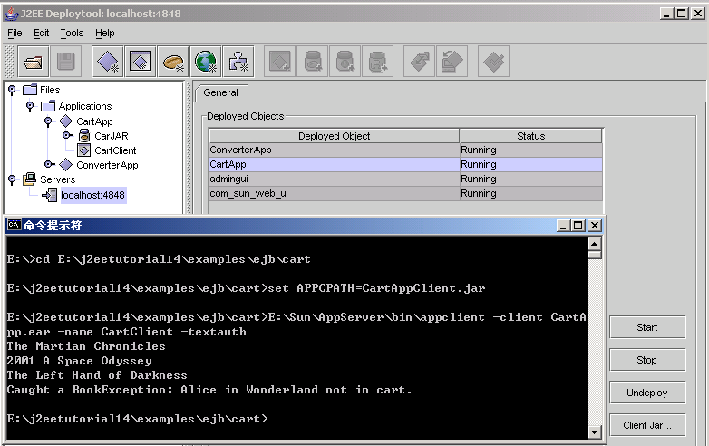
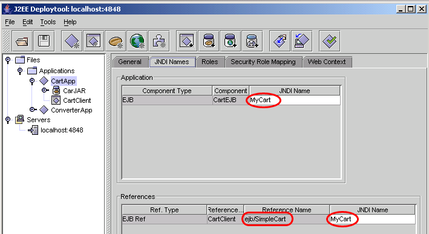

继续学习j2ee Tutorial.
创建一个允许远程访问的会话EJB,需要分属三个文件的三类代码：会话EJB类、Home接口、远程接口。
会话EJB类的取名要示为***Bean，且要满足以下要求：
ejbCreate方法
EJB运行在EJB容器中，客户不能直接实例化它们，只有EJB容器能够实例化EJB，过程如下：
业务方法
要求如下：
Home接口
对会话EJB而言，其HOME接口主要用于远程客户可能调用的create方法。Home中的每一个create方法，在EJB类中都有对应的ejbCreate方法。
Home接口的create方法的要求如下：
远程接口
定义远程客户调用的业务方法。
远程接口中的方法定义要求如下：
相关代码
三个主要文件
=====Cart.java=====
import java.util.*;
import javax.ejb.EJBObject;
import java.rmi.RemoteException;
public interface Cart extends EJBObject {
public void addBook(String title) throws RemoteException;
public void removeBook(String title) throws BookException, RemoteException;
public Vector getContents() throws RemoteException;
}
=====CartHome.java=====
import java.io.Serializable;
import java.rmi.RemoteException;
import javax.ejb.CreateException;
import javax.ejb.EJBHome;
public interface CartHome extends EJBHome {
Cart create(String person) throws RemoteException, CreateException;
Cart create(String person, String id) throws RemoteException, CreateException;
}
=====CartBean.java=====
import java.util.*;
import javax.ejb.*;
public class CartBean implements SessionBean {
String customerName;
String customerId;
Vector contents;
public void ejbCreate(String person) throws CreateException {
if (person == null) {
throw new CreateException("Null person not allowed.");
} else {
customerName = person;
}
customerId = "0";
contents = new Vector();
}
public void ejbCreate(String person, String id) throws CreateException {
if (person == null) {
throw new CreateException("Null person not allowed.");
} else {
customerName = person;
}
IdVerifier idChecker = new IdVerifier();
if (idChecker.validate(id)) {
customerId = id;
} else {
throw new CreateException("Invalid id: " + id);
}
contents = new Vector();
}
public void addBook(String title) {
contents.addElement(title);
}
public void removeBook(String title) throws BookException {
boolean result = contents.removeElement(title);
if (result == false) {
throw new BookException(title + " not in cart.");
}
}
public Vector getContents() {
return contents;
}
public CartBean() {}
public void ejbRemove() {}
public void ejbActivate() {}
public void ejbPassivate() {}
public void setSessionContext(SessionContext sc) {}
}
两个辅助类
=====IdVerifier.java=====
public class IdVerifier {
public IdVerifier() {}
public boolean validate(String id) {
boolean result = true;
for (int i = 0; i < id.length(); i++) {
if (Character.isDigit(id.charAt(i)) == false) {
result = false;
}
}
return result;
}
}
=====BookException.java=====
public class BookException extends Exception {
public BookException() {}
public BookException(String msg) {
super(msg);
}
}
客户端
=====CartClient.java=====
import java.util.*;
import javax.naming.Context;
import javax.naming.InitialContext;
import javax.rmi.PortableRemoteObject;
public class CartClient {
public static void main(String[] args) {
try {
Context initial = new InitialContext();
Object objref = initial.lookup("java:comp/env/ejb/SimpleCart");
CartHome home = (CartHome) PortableRemoteObject.narrow(objref,CartHome.class);
Cart shoppingCart = home.create("Duke DeEarl", "123");
shoppingCart.addBook("The Martian Chronicles");
shoppingCart.addBook("2001 A Space Odyssey");
shoppingCart.addBook("The Left Hand of Darkness");
Vector bookList = new Vector();
bookList = shoppingCart.getContents();
Enumeration enumer = bookList.elements();
while (enumer.hasMoreElements()) {
String title = (String) enumer.nextElement();
System.out.println(title);
}
shoppingCart.removeBook("Alice in Wonderland");
shoppingCart.remove();
System.exit(0);
} catch (BookException ex) {
System.err.println("Caught a BookException: " + ex.getMessage());
System.exit(0);
} catch (Exception ex) {
System.err.println("Caught an unexpected exception!");
ex.printStackTrace();
System.exit(1);
}
}
}
运行结果如图：
需要注意的问题：
1、在布署应用时，一定要选中Return Client Jar这个单选框。
2、要注意ejb ref的定义，参考下图，其中方框中的ejb/SimpleCart要在CartClient的基本属性中定义。

3、具体的编译、打包及部署过程，请参考前一篇blog.
不错，简明扼要，要是介绍一下，配置是使用其它的应用服务器，就好了。
Posted by: 魔戒 at January 14, 2004 06:28 PM